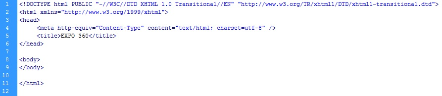
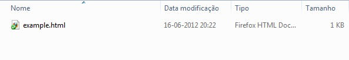
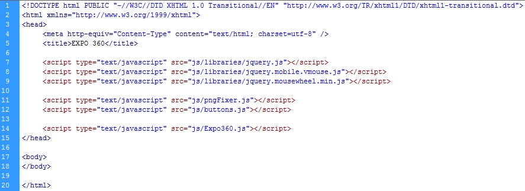
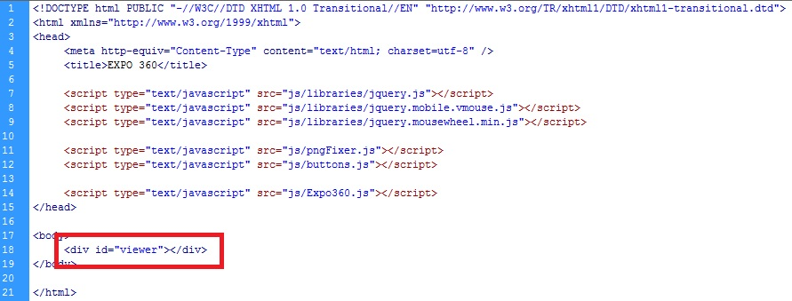
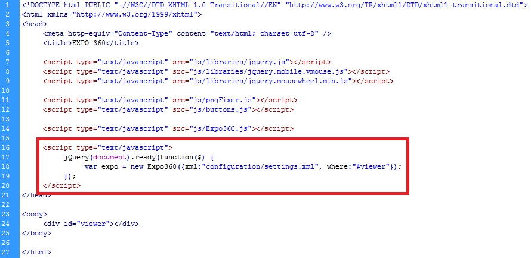
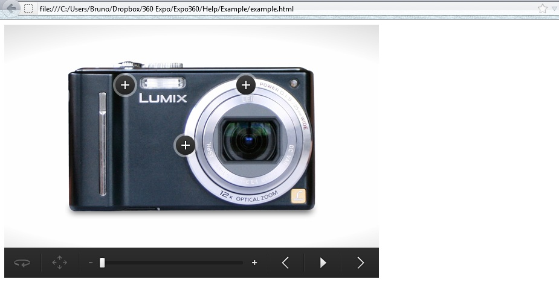
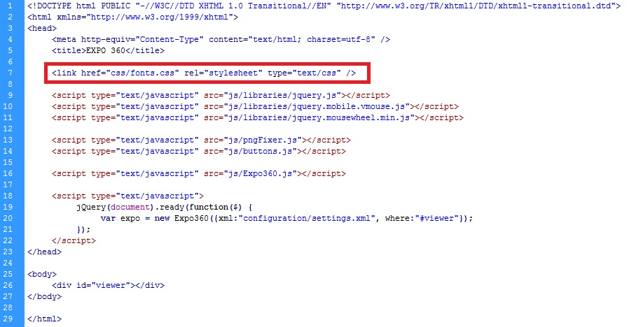
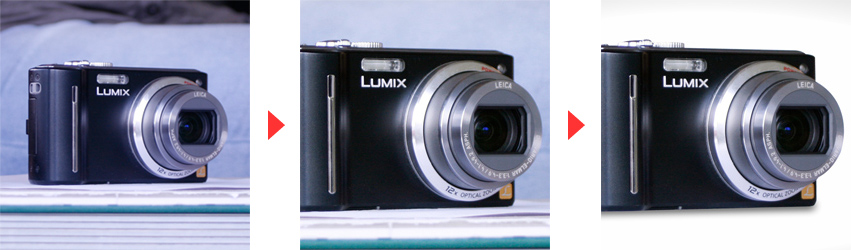

Thank you for purchasing Expo360. If you have any questions that are beyond the scope of this help file feel free to use our support center at ticksy. Thanks so much!
Houdy, I'll start by explaining to you how the file is structured, what each part does and where you can costumize your 360º product viewer.
The application as you may now is done in javascript and using the jquery library v1.6.2 it also uses a configuration xml file which path you pass as argument when calling the script and a group of ui images that you can change accordingly as long as you maintain the same file names.
You might be asking, why no css file?
That's because all the css styles are applied directly through javascript so there isn't any interference between classes among css files from your website.
And that's basically it for the structure. Let's start making your first product viewer :-)
Here I'll explain how to set up a product viewer from nothing, so you can see what you need to include and have on your site.
Let's assume I have a blank html page like this:

and our project folder is like this:

You start by copy paste the js folder and all it's contents from expo360 download package.
Now you need to include all the javascript needed for the file to work in your header. You need the following includes:
<script type="text/javascript" src="js/libraries/jquery.js"></script> <script type="text/javascript" src="js/libraries/jquery.mobile.vmouse.js"></script> <script type="text/javascript" src="js/libraries/jquery.mousewheel.min.js"></script> <script type="text/javascript" src="js/pngFixer.js"></script> <script type="text/javascript" src="js/buttons.js"></script> <script type="text/javascript" src="js/Expo360.js"></script>
Being in order:
We know have something like this:

Now you have all the libraries ans scripts needed for a clean run. What to do next?
Now you should define your configuration file where you have a lot of comments to guide you through.
What will this configuration file contain:
You have to include the ui images used by the expo360, so copy paste the ui_images folder into your project
Start by creating a div where the expo360 will place everything, associate an id with that div so we have something like this:

Now you just need to call the script giving it the configuration file path and the div where it should appear, this is code you need to add in the header:
<script type="text/javascript">
jQuery(document).ready(function($) {
var expo = new Expo360({xml:"configuration/settings.xml", where:"#viewer"});
});
</script>
So you'll end with something like this:

You should be able to see your progress now, with my configuration file I have something like this:

Note that the fonts used in the preview and in the examples are costum fonts are aren't still included, you can set other font like 'arial' on the configuration file or you can import the fonts used.
To do this copy paste the css folder into your project and just include the fonts.css in the header like this:
<link href="css/fonts.css" rel="stylesheet" type="text/css" />
You should have something like this in your html:

You should now have a good notion of how to integrate this anywhere. Checkout the next chapter to see how you can make costum hotspots.
Here I'll tell you how you can create hotspots according to your site's style.
After having your viewer running (previous chapter), you can now start to costumize a bit more your viewer and add some hotspots to it. This is all done in the configuration xml file.
The configuration file has a lot of comments to guide you through but decided to give you a better understanding of how the hotspots work.
You can create hotspots in any image you want from your image list, they will pop up when the users drags to that image.
There are 3 types of hotspots:
Small and big types are the ones that need some special attention.
The small type will create a small window above the hotspot button, you can put any content you want, the elements you put are going to fetch the style defined in you page stylesheets.
So if you want to make a hotspots with just some text, you can do something like this:
<html><![CDATA[<p>Some small phrase</p>]]></html>
This text will have the style you have defined for the 'p' tag in your site. If you don't have any stylesheet in your site for this, it will appear with the defaults browser's style.
All the content must be between the cdata tag: <![CDATA[ your content goes here ]]>
As to the big type, it will open the html file you set with ajax loaded directly into the product viewer's view, as in the small type, the styles must be associated already in your site or you can define new ones on the loaded html itself.
You have two control functions you can use to control the product viewer, supposing you have a button with id 'button' and that your Expo360 object is named 'expo':
$("#button").click(function(){
expo.goTo(0);
return false;
});
$("#button").click(function(){
expo.zoomTo(2);
return false;
});
Have control functions requests? Drop us an email through our profile :)
Regardless of how you want to create the photos needed for a full product spin, it will take some time and effort to get the required set. The more photos you use, the smoother the product spin looks. And ideal amount to use is between 24 and 36. Our demo uses 32, which ensures smooth spinning without too much data being transferred. There are several ways in which you might get the series of photos:
1. Create the photos yourself - the easy way
This probably is the easiest way to get the required set of photos. This is also the way which we used to create the demo of the component. It’s a bit messy, however it’s cheap and also fast if you want to display just a single item.
All you need to do is to place a camera on a tripod and put a product on the table that you want to show on your website. Either you put the box in a lightbox or you can cut the product out of the photos later on. Here you can see the three steps we used to create the demo photos:

|
Raw photo, unedited and uncut |
Color and contrast corrected |
Camera cut out and background replaced |
1. Create the photos yourself - the more professional way
If you are planning on getting really serious with using product spins you might want to automate and professionalize a bit. In order to have a smooth product spin with exact angles, a turntable might help. If you search on ‘360 turntable’ on Google, you’ll get plenty of results. Companies like emeDigital (http://www.emedigital.co.uk) offer a wide variety of small and large hardware solutions for smooth spinning and good photos.
If you want to increase the quality of your product photos, there are several tutorials online (e.g. on Youtube) explaining how to set up an easy lightbox to create crisp and clean product photos. You can find an example here: http://www.youtube.com/watch?v=enK2hbSN6hQ
2. Photos by a professional photo studio
This of course is one of the more expensive options, however, there are firms specialized in creating 360 spin photo series of your products. Searching Google will give you plenty of options here.
3. Creating a set of 3D renderings
When your product is a prototype, doesn’t exist yet, is too difficult to actually turn on a turntable or you just think it’s the best solution: create a 3D rendering of your product. This option will allow you to easily create the photos required without the use of a camera, studio and all other hardware required.
Do you have smarter solution that we can add to this little manual?
Please do send us an e-mail through our profile!